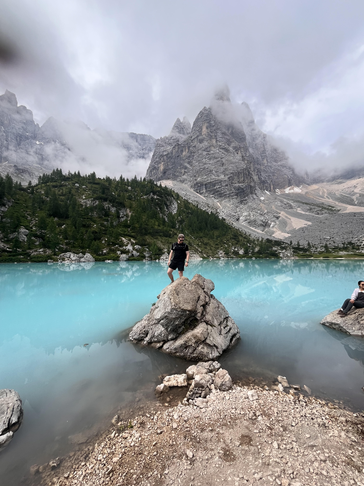
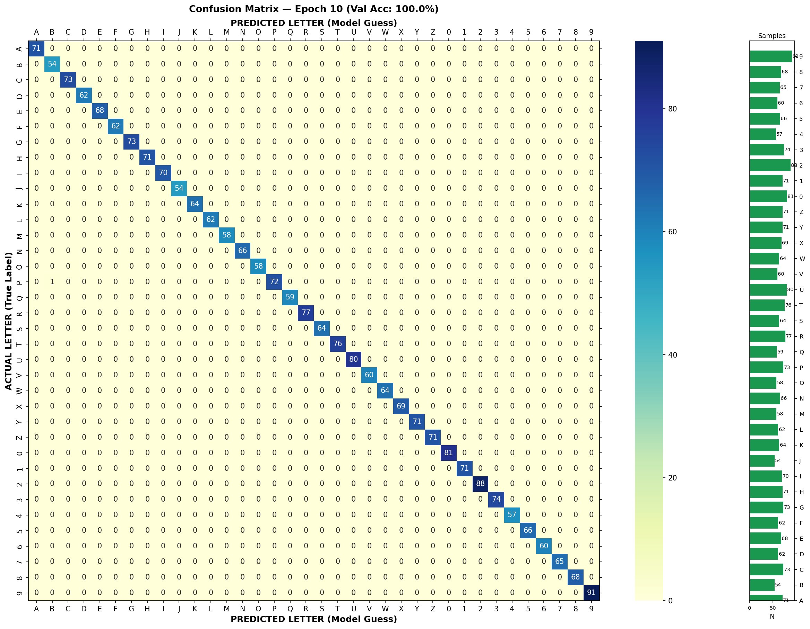
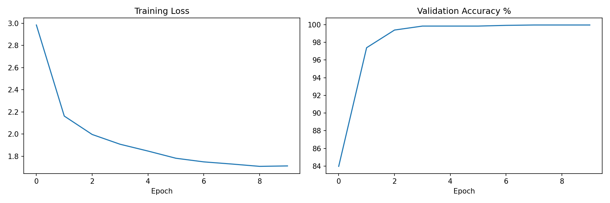
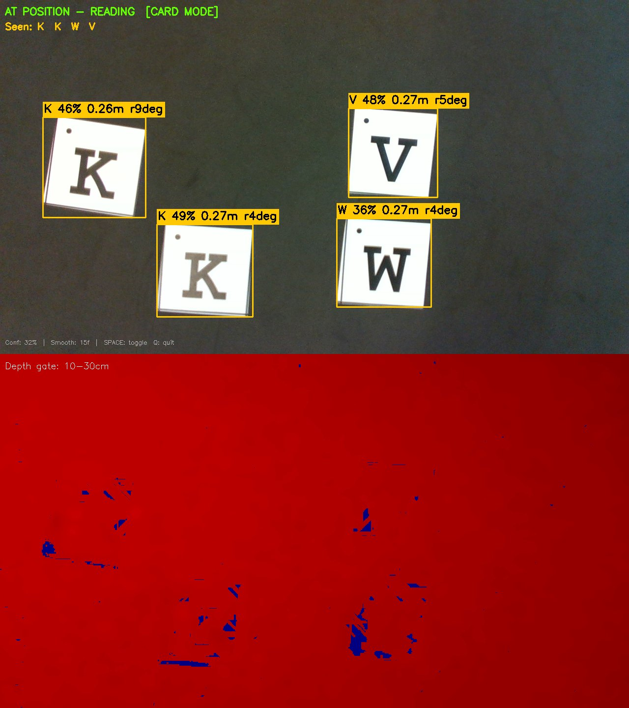
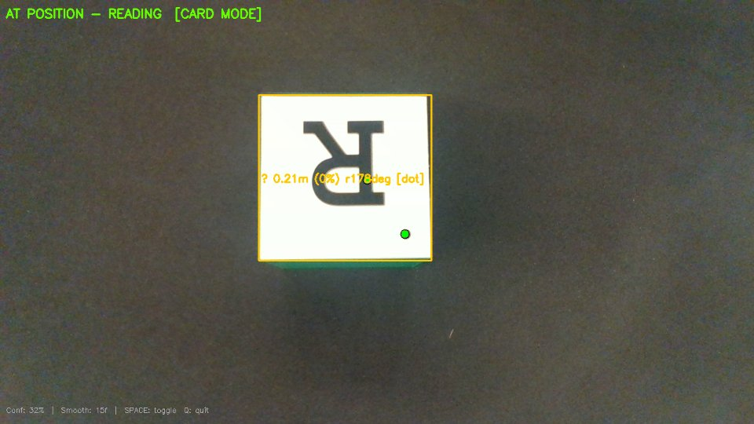

A UR3e robotic system that autonomously plays Wordle
1University of Technology Sydney · FEIT / MME
WordleBot RS2 is a fully autonomous robotic system that plays the word game Wordle. An Intel RealSense D435i depth camera scans a workspace of lettered blocks. A custom convolutional neural network classifies each letter in real time, and TF2 transforms project block positions from camera frame into the robot world frame. A word-solver selects an optimal 5-letter guess, and a reinforcement-learning trained UR3e arm executes pick-and-place to physically spell the word on the board — all without human intervention.
The project spans two tightly integrated tracks: a Perception & CNN track (Luke Klusman & Elijah Spannerberg) responsible for visual letter detection, 3D localisation, GUI feedback, and game logic; and an RL & Path Planning track (Connor Lindsell & James Farrell) responsible for training a PPO policy in simulation and deploying it on the physical robot for block manipulation.

The video below shows WordleBot playing a full game — from the initial camera scan through word selection, block manipulation, and Wordle feedback processing.
Video 1 — [Add description: e.g. CNN letter detection live demo]
Video 2 — [Add description: e.g. Full system end-to-end demo]
The four subsystems communicate via ROS 2 topics and services. The perception node publishes detections every frame while scanning; the completed gameboard is latched and consumed by the path planner. The behaviour tree coordinates transitions so the robot never moves while the camera is reading.
| Topic | Type | Publisher | Subscribers | Description |
|---|---|---|---|---|
| /perception/detections | String (JSON) | SS1 | SS4, SS3 | Per-frame letter detections with camera-frame 3D positions, confidence, rotation |
| /perception/gameboard_state | GameboardState (latched) | SS1 | SS2, SS3 | World-frame poses for all detected blocks — published once per completed scan |
| /perception/human_detected | Bool ~5 Hz | SS1 | SS3 | Safety signal — triggers SAFETY_STOPPED state and robot stop |
| /perception/image_annotated | sensor_msgs/Image | SS1 | SS3 GUI | Annotated camera frame with detection overlays for CV view in GUI |
| /mission/state | String (latched) | SS3 | SS1, SS4 | SCANNING / IDLE — controls perception scan window and game lifecycle |
| /wordle_bot/mission_state | String (latched) | SS3 | SS3 GUI | 10-state coordinator FSM: IDLE, SCANNING, READY_TO_MOVE, MOVING, STOPPED … |
| /wordle_bot/mission_progress | String JSON (latched) | SS3 | SS3 GUI | 7-step mission plan with per-step status for diagnostics panel |
| /wordle_bot/start_mission | Bool | SS3 | SS2 | Pulse signal (5×) to start robot motion execution |
| /wordle_bot/stop_mission | Bool | SS3 | SS2 | Emergency stop — published by safety guard on human detection |
| /gamification/guess | String | SS4 | SS3 GUI | Current 5-letter word guess — GUI previews it on the Wordle board |
| /gamification/mission_state | String JSON | SS4 | SS2 | Ordered letter placement sequence with 3D pick positions for each letter |
| /gamification/confirmation_status | String JSON | SS4 | SS3 | CONFIRMED or CONFIRMATION_FAILURE for pre/post-motion letter verification |
| /hl_control/word_request | String (latched) | SS4 | SS2 | Confirmed 5-letter word — arms SS2 pick-and-place pipeline automatically |
| /diagnostics | String JSON | SS4 | SS3 GUI | Full game state: status, attempt, candidates left, found/looking-for letters |
The LetterCNN was trained on 36 classes (A-Z, 0-9) collected using a custom data collection pipeline. The preprocessing chain — grayscale conversion, 64x64 resize, histogram equalisation — is matched exactly between training and inference to avoid distribution shift. Temporal majority-vote smoothing over 15 frames suppresses single-frame misclassifications in the live detection stream.




Elijah's SS3 subsystem is a Qt5 C++ application combining a full operator GUI with an embedded ROS 2 mission coordinator. The GUI provides four views (RViz simulation, HL digital twin, camera, diagnostics), an embedded Wordle board rendered via QWebEngineView, voice control with speaker verification, and safety controls. The mission coordinator runs as a separate C++ node ticking at 500 ms with a behaviour-tree-style priority structure: safety guard → failure detection → recovery → command → motion → scan.
gui_main.png
Replace with a screenshot of the GUI main window
gui_wordle.png
Replace with a screenshot of the embedded Wordle board
A PPO (Proximal Policy Optimisation) agent was trained in simulation to control the UR3e arm for pick-and-place tasks. The policy was evaluated on reward convergence, task success rate, and transfer performance on the physical robot.
reward_curve.png
Replace with your PPO reward convergence plot
trajectory.png
Replace with a trajectory visualisation or sim screenshot
robot_execution.png
Replace with a photo of the UR3e executing pick-and-place
The perception pipeline achieved reliable letter recognition under varied lighting by combining a depth-gated contour detector with temporal smoothing. The dot-based orientation estimator resolved the 180-degree ambiguity that bounding-box methods cannot, which proved critical for orientation-sensitive letters. Tight coupling between the training preprocessing chain and live inference was essential — histogram equalisation applied at both stages eliminated a key source of distribution shift.
The RL path planner demonstrated that a policy trained entirely in simulation can transfer to the physical UR3e with minimal fine-tuning, provided the reward function accurately captures the task constraints. The behaviour tree integration ensured clean handoffs between subsystems, preventing the robot from moving while the camera was mid-scan and enabling safe operation alongside human operators.
Future directions include extending the CNN to handle partially-occluded letters, improving sim-to-real transfer robustness through domain randomisation during training, and scaling the word solver to support alternative vocabulary sets or longer words. A unified pipeline connecting perception outputs directly to motion planning represents a longer-term research opportunity for the system.
Tested on Ubuntu 22.04, ROS 2 Humble, Python 3.10.
# Clone and build
git clone https://github.com/LukeFKlusman/WordleBot.git
cd wordlebot_ws && colcon build
# Install Python dependencies
pip install torch torchvision opencv-python pyrealsense2 stable-baselines3
# Terminal 1 - RealSense driver
ros2 launch realsense2_camera rs_launch.py enable_depth:=true align_depth.enable:=true
# Terminal 2 - Perception node
python3 realsense_camera_cnn.py
# SPACEBAR = toggle scanning Q = quit